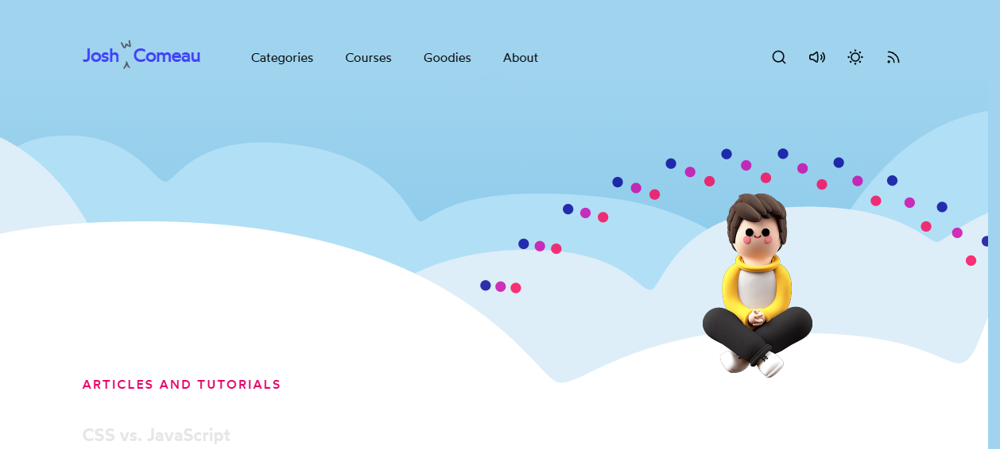

Developer Portfolio Field Guide — curated & ranked.
A quality-filtered shortlist of the best developer / design-engineer portfolio sites, derived from hands-on teardowns. Each entry was loaded live, inspected at the DOM/asset level, and screenshotted — ranked by craft you can learn from, not fame.
1 · How to read this
This is curated, not a dump. The well-known list emmabostian/developer-portfolios is a raw, unranked firehose — hundreds of links, most generic, no signal on which are actually worth studying. What follows is the opposite: the standouts that survived a real teardown, ranked by craft you can learn from.
- "Standout craft" = the one thing this site does better than almost anyone.
- "Best for learning…" = what skill/pattern you'd open it to study.
- Brutal-honesty rule: a few entries are famous but not worth deep study (template-grade, or the live site no longer matches its reputation). Those are flagged explicitly and sit lower or in "Notable but niche."
- Reachability caveats are called out inline. Five targets were down/stubbed at teardown time (
aprilzero,gao.show,gianmarco.xyz,calebbrown.dev,wei-gao); see their files for the forensic detail.
2 · The ranked table
Ranked by craft you can learn from. The Teardown column links to the full DOM/stack/motion write-up for each site.
| # | Portfolio | URL | Standout craft | Best for learning… | Teardown |
|---|---|---|---|---|---|
| 1 | Brittany Chiang | brittanychiang.com | The reference dev-portfolio: sticky split-screen, scroll-spy nav, cursor spotlight, a11y as a feature | The canonical "calm engineer" single-page layout | brittany-chiang.md |
| 2 | Cassie Evans | cassie.codes | The site is the demo reel — GSAP physics motion + hand-drawn SVG, zero stock | Performing skill instead of describing it | cassie-evans.md |
| 3 | Josh Comeau | joshwcomeau.com | Homepage is a live demo of the whimsical craft it teaches; modern RSC stack, no template smell | "Prove, don't claim" + correct dark-mode/perf | josh-comeau.md |
| 4 | Dennis Snellenberg | dennissnellenberg.com | Award-tier from motion alone: buttery transitions, magnetic links, photo-matched-to-UI palette | High-end freelancer motion + microinteraction budget | dennis-snellenberg.md |
| 5 | Sara Soueidan | sarasoueidan.com | Flawless semantic structure + world-class type; the DOM itself is the credibility | Accessibility-first, system-font, whitespace-as-hierarchy | sara-soueidan.md |
| 6 | Henry Heffernan | henryheffernan.com | A working 90s OS rendered onto a 3D CRT — real React UI on a screen mesh | Diegetic IA + boot-gate, with a11y DOM kept underneath | henry-heffernan.md |
| 7 | Lee Robinson | leerob.com | Throws out the whole playbook: 3 paragraphs of serif prose, nouns are the links | Radical reductive "bio-as-homepage" confidence | lee-robinson.md |
| 8 | Tim Roussilhe | timroussilhe.com | Navigation is a WebGL portal that morphs screens into letterforms | DOM-synced shaders, scroll-velocity uniforms (advanced) | tim-roussilhe.md |
| 9 | Paul Stamatiou | paulstamatiou.com | Reads like an art-directed print magazine; bespoke font program, paper palette | Editorial restraint + custom type as identity | paul-stamatiou.md |
| 10 | Jhey Tompkins | jhey.dev | One-screen bio with a live "now" status island; three typefaces encode tone | Astro islands + typeface-driven hierarchy | jhey-tompkins.md |
| 11 | Adham Dannaway | adhamdannaway.com | One split-portrait hero states "designer + developer" with near-zero copy | Concept-over-tech hero (it's just WordPress) | adham-dannaway.md |
| 12 | Robb Owen | robbowen.digital | Bespoke per-project line-art + SVG textures; motion praise without GSAP/WebGL | Illustration-led storytelling on a light theme | robb-owen.md |
| 13 | Tania Rascia | taniarascia.com | Content-dense "digital garden" that stays calm; sidebar IA + editorial type | Fixed-sidebar shell for content-heavy sites | tania-rascia.md |
| 14 | Hakim El Hattab | hakim.se | Magazine-essay bio + live animating project tiles; reveal.js author | Editorial serif prose + inline progressive disclosure | hakim-el-hattab.md |
| 15 | Mike Hall | mikemai.net | World-class craft from semantic HTML + CSS only; CSS-only 5-mode theme switcher | Typography-as-brand, near-zero-JS discipline | mike-hall-mikemai-net.md |
| 16 | Jack McDade | jackmcdade.com | Defiantly anti-minimalist kitsch executed so well the chaos reads as intentional | A loud, opinionated brand point-of-view | jack-mcdade.md |
| 17 | Lynn Fisher | lynnandtonic.com | Rebuilds her whole site from a blank CSS file every year; each is CSS art | CSS-art restraint + version/archive as a flex | lynn-fisher.md |
| 18 | Jesper Landberg | jesper-landberg.dev | 30+ Awwwards SOTD; current site is a stripped-back Swiss type index | Confidence-through-subtraction, editorial index | jesper-landberg.md |
| 19 | Cassidy Williams | cassidoo.co | Hand-crafted monospace single-column with rainbow links + "random post" | Voice/personality over framework | cassidy-williams.md |
| 20 | Lou Hoebregts (LHC) | lhc.fr | IBM Plex Mono grid + per-letter color type + lazy-mounted phyllotaxis field | Vanilla-JS generative centerpiece, mono identity | lhc-louis-hoebregts.md |
| 21 | Andrei Terteci | andreiterteci.com | "Boring" Next.js + Tailwind made premium by one gradient + sharp copy | Conversion-funnel IA + founder-framed copywriting | andrei-terteci.md |
| 22 | Manu Arora | manuarora.in | Aceternity UI's founder chose a text-first "personal letter" — taste over spectacle | Anti-portfolio restraint, list-as-résumé pattern | manu-arora.md |
| 23 | Pol Piella | polpiella.dev | "World-class" on pure Astro + Tailwind + system fonts; proof-led IA | Zero-animation polish, dated-achievement lists | pol-piella.md |
| 24 | Olaolu Olawuyi | olaolu.dev | One screen of plain prose + a shock-contrast footer that does all the nav | Copy-as-design, footer-as-navigation | olaolu-olawuyi.md |
| 25 | Sam Dape | developer-portfolios | One grey screen, three low-poly objects that are the navigation | Image-as-navigation + radical subtraction | sam-dape.md |
| 26 | Gianmarco Cavallo ⚠ | gianmarcocavallo.com | Bento-grid "playable toy": theme+style switchers, world clock, easter egg | Bento IA + signature interactive flourish | gianmarco-cavallo.md |
| 27 | Anand Sharma (aprilzero) ⚠ | aprilzero.com | Legendary quantified-self 3D dashboard — but the live URL is now a black stub | Motion-as-craft philosophy (study the write-ups) | anand-sharma-aprilzero.md |
| 28 | Wei Gao ⚠ | developer-portfolios | Illustrated "Fluffy Philharmonic" mascot universe — domain is dead | Mascot-as-identity (and the keep-your-domain-alive lesson) | wei-gao.md |
| 29 | Caleb Brown ⚠ | caleb-brown.dev | Unmodified Hugo "Coder" template — the floor, not the ceiling | What minimal-but-generic looks like (a baseline) | caleb-brown.md |
| 30 | Gao Hongyu ⚠ | gao.show | Unverifiable — domain NXDOMAIN, no archive, nothing to study | — (re-confirm URL; likely confused with romanjeanelie.com) | gao-hongyu.md |


3 · Tiers — why each sits where it does
S-tier — study deeply
Brittany Chiang ↗ · Cassie Evans ↗ · Josh Comeau ↗ · Dennis Snellenberg ↗ · Sara Soueidan ↗
These are the ones to open in DevTools and dissect. Each defines a different correct answer to "what is a great dev portfolio":
- Chiang = the calm-engineer layout archetype (so good it's the most-cloned on GitHub — clone the discipline, not the pixels).
- Cassie / Josh = "the site is the proof" — the homepage itself performs the craft, with no separate gallery needed.
- Dennis = how far pure motion + microinteraction polish gets you with a near-monochrome palette.
- Sara = the engineering-credibility route: semantic structure, a11y, and typography are the demo. Lowest spectacle, highest signal for a pure-engineer audience.

A-tier — strong references
Henry Heffernan ↗ · Lee Robinson ↗ · Tim Roussilhe ↗ · Paul Stamatiou ↗ · Jhey Tompkins ↗ · Adham Dannaway ↗ · Robb Owen ↗ · Tania Rascia ↗ · Hakim El Hattab ↗
Excellent and worth borrowing from, but each is a specific bet rather than a universal template — copy the idea, not the whole site:
- Henry / Tim = high-ambition WebGL/3D set pieces. Stunning, but expensive to build and maintain; steal the pattern (boot-gate, DOM-synced portal) before the spectacle.
- Lee / Hakim = the prose-first, anti-grid bet — magnificent if your writing carries it, weak if it doesn't.
- Paul / Robb / Tania = editorial/illustration-led craft; the differentiator is taste (custom type, bespoke line-art), not tech.
- Jhey / Adham = one strong idea (live status island; split-portrait concept) executed cleanly on a light stack.
Notable but niche
Mike Hall ↗ · Jack McDade ↗ · Lynn Fisher ↗ · Jesper Landberg ↗ · Cassidy Williams ↗ · Lou Hoebregts ↗ · Andrei Terteci ↗ · Manu Arora ↗ · Pol Piella ↗ · Olaolu Olawuyi ↗ · Sam Dape ↗
Real craft, but each leans on a strong personal premise (a loud brand, a yearly CSS-art rebuild, a Swiss-type index, "look how little I can ship"). Brilliant for that person; risky to copy wholesale because the magic is the conviction, not a reusable mechanic. Mine them for individual moves — Mike's CSS-only theme switcher, Lynn's archive-as-flex, Olaolu's footer-as-nav, Andrei's single-gradient cohesion.
Honest demotions / do-not-bother
- Caleb Brown — an unmodified Hugo template. Useful only as a "this is the generic floor" reference; nothing proprietary to steal. (The exact target
calebbrown.devwas also down — 504; findings are from the livecaleb-brown.devtwin.) - Anand Sharma (aprilzero) — historically a landmark, but the live URL is now a black placeholder. Study the legend via his "Making of April Zero" articles and gyrosco.pe, not the dead domain.
- Wei Gao — genuinely charming concept, but the domain has lapsed and the site is unreachable. Its loudest lesson is operational: a portfolio is only an asset while the domain is alive.
- Gao Hongyu — unverifiable (NXDOMAIN, no archive). Likely a mis-filed/incorrect URL; possibly confused with romanjeanelie.com. Skip until the URL is reconfirmed.
4 · Patterns common to great dev portfolios
Synthesized across all 30 teardowns. The recurring moves the best sites share:
Hero
- Lead with one idea, not a paragraph. A split portrait (Adham), a generative toy (Josh), a value-prop sentence (Andrei), or three paragraphs of prose (Lee) — but one clear thesis above the fold.
- The hero often is the proof. For motion/CSS specialists, the homepage performs the skill (Cassie, Josh, LHC). Don't describe capability you can demonstrate.
- Restraint reads as senior. Suppressed type scale, off-black-on-off-white, one accent — confidence signals (Lee, Sara, Manu, Jesper) recur far more than spectacle.
Project storytelling
- Specificity over adjectives. Dated lists of talks/shipped apps with named companies and quantified impact (Pol, Olaolu, Andrei) beat "passionate developer."
- Editorial wayfinding is cheap and high-signal: numbered grids (01–08),
NN / totalcounters, year-tagged indexes, monospace metadata (Andrei, Tim, Jesper). - Make tiles move or be real: live animating thumbnails (Hakim), actual product screenshots (Adham), or bespoke per-project illustrations (Robb) instead of abstract placeholders.
About / voice
- Bio as the hero, nouns as nav (Lee, Hakim, Manu, Olaolu). For content-heavy people the homepage doubles as an index/sitemap (Tania).
- One human touch — a hand-drawn mascot, a signature SVG, a nickname, an easter egg (Sara's owl, Jhey's avatar, Chiang's Tardis). Cheapest way to read as a person, not a template.
Contact
Low-friction, personality-laden CTAs: prefilled mailto: with an emoji subject (Robb), Cal.com "book a call" tile (Gianmarco), inline contextual "contact me" at the end of the bio (Olaolu). Avoid a cold form where a one-liner works.
Motion budget
- Spend motion where it earns its maintenance cost. The S-tier sites either go all-in deliberately (Dennis, Cassie, Tim) or skip it entirely with taste (Sara, Lee, Manu) — almost none scatter half-baked effects.
- Cheap, disproportionate wins: cursor spotlight (~20 lines, Chiang), magnetic links (Dennis), View Transitions API page morphs (Lee, Gianmarco), scroll-velocity transforms (Tim). High perceived polish, low code.
- Concentrate the "wow": one lazy-mounted generative centerpiece (LHC) or one scripted hero transition (Henry) beats a dozen small animations.
Performance & stack
- Static-first is the norm: Astro / Eleventy / Next static export recur constantly (Cassidy, Sara, Pol, Jhey, Gianmarco). Fast load is treated as a feature, often stated out loud.
- System fonts or one self-hosted face — zero/near-zero font payload, hierarchy from weight + scale, not many sizes (Sara, Pol, Olaolu, Mike). When custom type is used, it's one characterful face doing the brand work.
- A11y is table stakes and a selling point for engineer-audience sites: skip-link as first DOM node, real landmarks, underline-not-color links, AA contrast (Sara, Chiang, Robb, Mike).
- Privacy-friendly analytics (Fathom / Umami / GoatCounter / Plausible) over Google Tag Manager — on-brand for a dev audience and keeps the page light.
- Open-sourcing the site doubles as a code sample and credibility signal (Cassidy, Manu, Pol, Tania).
- Operational lesson (Wei Gao): auto-renew the domain and keep a backup deploy on a platform subdomain — a portfolio is worthless the moment the domain lapses.